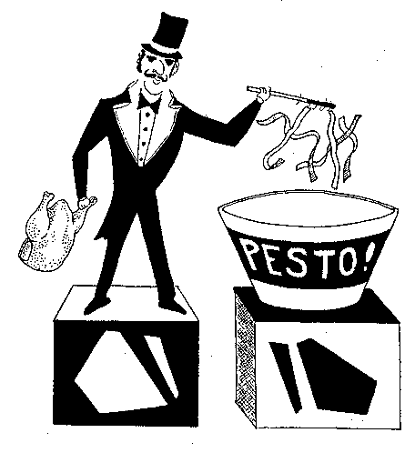

Click HERE to register your comments...or improve the recipe.Or do you want to take another look at the homepage MENU?
Or do you want to SEARCH for something specific?
Or do you want to take another look at the homepage MENU?
Or do you want to SEARCH for something specific?
Chicken Noodle Soup with Pesto
(Italianate)
It's a nice fragrant "i primi" for 8 people; serve hot; follow with Italian dishes.
An illustrative story from Sharon of Live Oak, California: This is a sad tale of a rooster who was just doing his song in the predawn hours last week under our neighbor's bedroom window. The neighbor not especially in good humor at that hour, reached over, took his shotgun in hand, leaned out his bedroom window and sent that bird to a quick and merciful end. My husband asked for the rooster, remembering his Italian grandmother's recipe for rooster soup. The plucked rooster simmered for several hours in stock with vegetable. Upon completion, the rooster was discarded, noodles were added and finishing touches of seasoning completed the soup. A little sprinkle of parmagiano if desired. Even a dead rooster can be worthy.
-

- 8 cups chicken stock
- 1 cup zucchini, cut into quarters or eighths lengthwise, then sliced into triangles
- 1/4 cup tomato paste
- 2-4 sundried tomatoes. slivered
- 1 and 1/2 cups fine egg noodles
- 3/4 cup shredded chicken
- 3 Tablespoons of pesto*
- salt and pepper
Combine broth, zucchini, slivered sun-dried tomatoes, and tomato paste in a Dutch oven and bring to a boil. Stir in noodles and cook al dente, about 5 minutes. Add the chicken and pesto. Season with salt and pepper. Divide among bowls and garnish with parsley.
*PESTO: You can buy this in most supermarkets--it lasts a long time in the refrigerator, longer if you freeze it and chip it out as needed. To make from scratch, put a cup of fresh basil leaves in a blender or processor with 1/2 cup pine nuts or walnuts, 2 cloves of peeled garlic, and 3/4 cup of grated Parmesan cheese. Process til it's thoroughly mixed, then gradually pour in 1/2 cup of olive oil til it's thick and completely pureed.